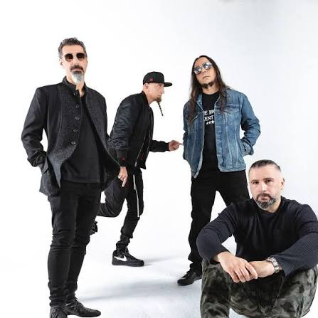
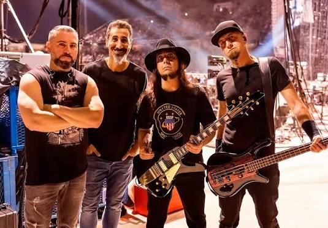

Toxicity Collective is a hyper-accurate, high-energy live tribute dedicated to preserving the chaotic brilliance of alternative metal icons, System of a Down. Formed by a group of dedicated musicians, the band recreates the precise vocal duals, heavy folk-infused rhythms, and unpredictable stage presence that defined the multi-platinum era of rock. From the manic screams of "Chop Suey!" to the driving anthems of Toxicity, they deliver an authentic, loud wall of sound built for the ultimate fan experience. Learn more about the Toxicity Collective.
Looking to skip the traditional, boring party tunes and inject absolute adrenaline into your special day? We specialize in bringing high-energy alternative rock sets to private parties, milestones, and untraditional weddings. Whether your guests want a full night of aggressive heavy metal or a tailored setlist combining mainstream radio hits, we modify our performance style to fit your event's exact vibe. It is the ultimate, unforgettable live experience for couples and hosts who dare to stand out. Book us now.
